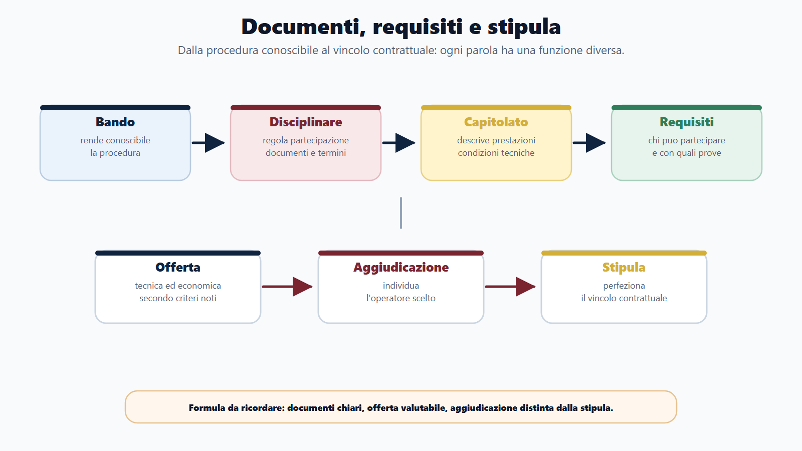
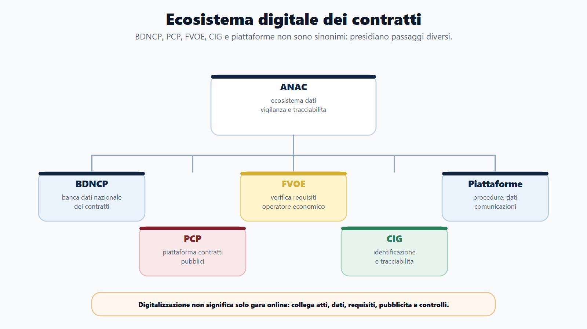
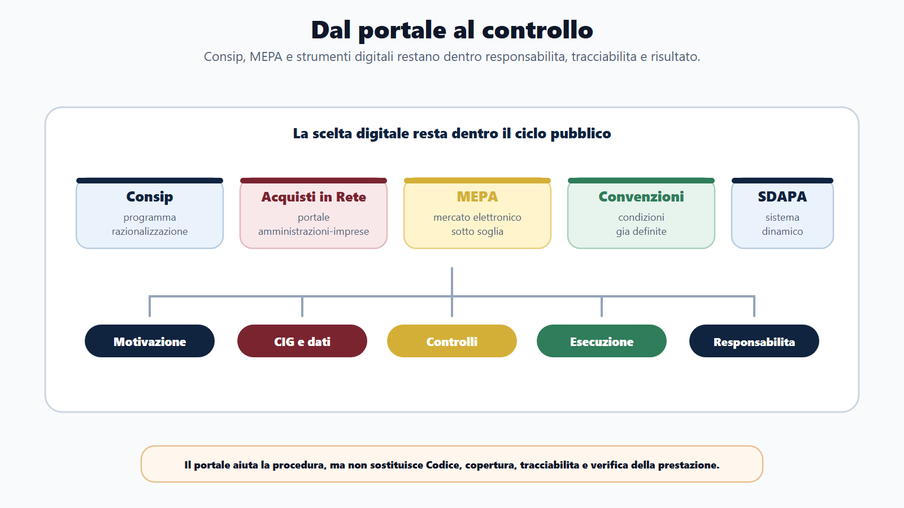
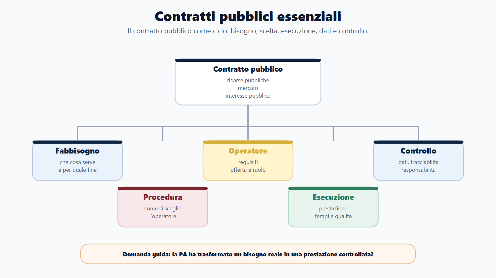
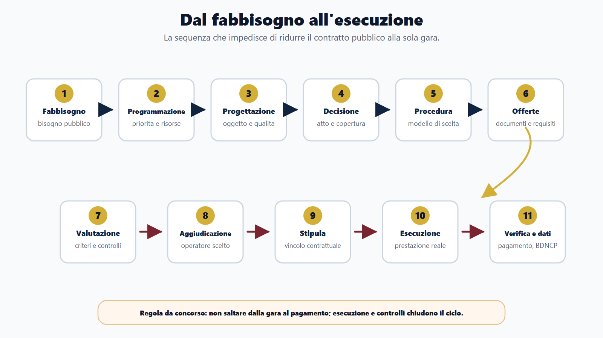
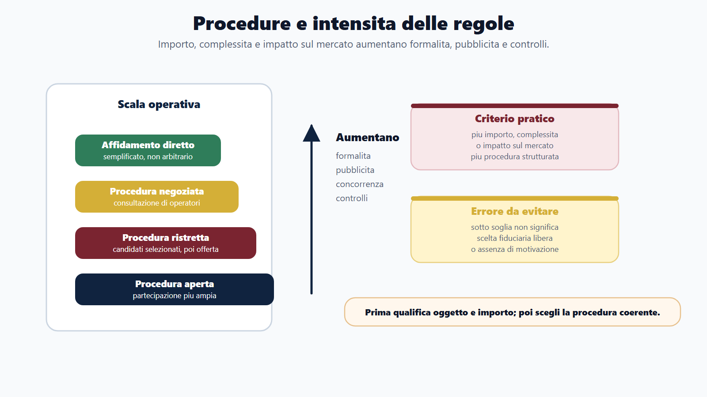

VOL-01 · Capitolo 09
Parte II · Materie comuni
Contratti pubblici
essenziali
Regolano il passaggio dal fabbisogno a una prestazione concreta: lavoro, servizio, fornitura o concessione. La commissione verifica se riconosci soggetti, principi, fasi, strumenti, responsabilità e controlli. La domanda tipica non è solo «che cos’è una gara?», ma come la PA passa dal bisogno all’esecuzione corretta.
Schema
Documenti gara offerte stipula

Schema
Ecosistema digitale contratti

Schema
Acquisti controlli responsabilita

Schema
Contratti pubblici mappa

Schema
Ciclo fabbisogno esecuzione

Schema
Procedure affidamento concorrenza

01 · Perché non è un contratto privato
Risorse pubbliche, regole pubbliche, interesse pubblico
La PA non produce sempre direttamente tutto ciò che serve. Per costruire una scuola, acquistare computer o affidare un servizio si rivolge al mercato, ma con legalità, concorrenza, trasparenza, imparzialità, buon andamento e controllo. Studiare solo la gara produce risposte incomplete: il contratto deve essere eseguito, controllato, pagato e reso tracciabile.
Fabbisogno
Che cosa serve e per quale interesse pubblico. Programmazione e progettazione, non acquisto improvvisato.
Affidamento
Con quale procedura si sceglie l’operatore. Documenti, requisiti, offerte, aggiudicazione, stipula.
Esecuzione
Prestazione nei tempi, nei costi e con la qualità richiesta. Verifica, pagamento, trasparenza.
02 · BANDO
Come usare questo capitolo sul bando
| Come usarlo | Errore da diario | |
|---|---|---|
| B — Bando | Cerca contratti pubblici, appalti, concessioni, Codice, RUP, MEPA, Consip, ANAC, affidamenti, gare, CIG, digitalizzazione. | Studiare soglie numeriche destinate a cambiare, invece della logica. |
| A — Aree | Collega a amministrativo, contabilità, trasparenza, anticorruzione, PA digitale, enti locali, responsabilità. | Duplicare il procedimento o il capitolo 8. |
| N — Nuclei | Prima soggetti e ciclo; poi principi, procedure, documenti, esecuzione, MEPA/Consip, digitale e controlli. | Ridurre tutto alla «gara». |
| D — Diario | Appalto/concessione, aggiudicazione/stipula, RUP/dirigente, MEPA/Consip, BDNCP/FVOE. | Le coppie da quiz. |
| O — Output | Schema dal fabbisogno all’esecuzione, tabella procedure, orale sul RUP, caso su acquisto informatico. | Elenco di articoli senza sequenza. |
03 · Codice e principi
D.Lgs. 36/2023 vigente; D.Lgs. 209/2024 correttivo di rilievo
Nel libro base conta la logica del sistema, non l’articolo per articolo. Le soglie e i termini vanno verificati alla data del concorso. I principi stanno all’inizio del Codice: molte domande distinguono il nuovo impianto da una visione puramente formalistica.
| Principio | Significato essenziale | Errore da evitare |
|---|---|---|
| Risultato (art. 1) | Conseguire l’interesse pubblico con affidamento ed esecuzione corretti, tempestivi e convenienti. | Pensare che consenta di ignorare legalità, concorrenza o trasparenza. |
| Fiducia (art. 2) | Valorizza iniziativa, autonomia e responsabilità di funzionari e operatori. | Confonderla con assenza di controlli. |
| Accesso al mercato (art. 3) | Concorrenza, imparzialità, non discriminazione, pubblicità, proporzionalità. | Ridurlo a apertura senza regole, o imporre sempre la stessa procedura. |
Restano centrali legalità, imparzialità, buon andamento, economicità, efficacia, efficienza, pubblicità, trasparenza, proporzionalità, buona fede e tutela dell’affidamento. Nei contratti diventano criteri per scegliere, motivare, controllare e pagare.
04 · Soggetti e RUP
Responsabile unico del progetto, non «del procedimento» in senso generico
Il RUP (art. 15 e All. I.2) presidia il ciclo: programmazione, affidamento ed esecuzione, nei limiti previsti. Non coincide automaticamente con il dirigente che firma l’atto finale e non sostituisce direttore dei lavori, direttore dell’esecuzione, uffici finanziari e organi competenti.
| Soggetto | Funzione |
|---|---|
| Stazione appaltante | Affida un contratto di appalto e gestisce la procedura. |
| Ente concedente | Affida una concessione, con rilievo del rischio operativo. |
| Operatore economico | Offre lavori, servizi o forniture; se selezionato, esegue. |
| Centrale di committenza / soggetto aggregatore | Procedure o acquisti aggregati; professionalizzazione e riduzione della frammentazione. Spesso insieme a Consip e MEPA. |
05 · Dal fabbisogno all’esecuzione
La tabella è il cuore del capitolo
Un capitolato scritto male genera offerte non comparabili, contestazioni, varianti, ritardi. Programmare significa chiedersi se la prestazione è necessaria, sostenibile, coperta, con tempi realistici e procedura adeguata.
| Fase | Che cosa accade |
|---|---|
| Fabbisogno e programmazione | Bisogno pubblico, priorità, risorse, rischi di esecuzione e trasparenza. |
| Progettazione e decisione di contrarre | Oggetto, capitolato, importo, qualità; atto con elementi essenziali, procedura, criteri. |
| Scelta, pubblicità, offerte, valutazione | Aperta, ristretta, negoziata, affidamento diretto; bando o invito; commissione, criteri, soccorso istruttorio. |
| Aggiudicazione e stipula | Si individua l’operatore; poi si perfeziona il vincolo. Non sono sinonimi. |
| Esecuzione, verifica, pagamento | Direzione, SAL, penali, collaudo o conformità, fattura, liquidazione, BDNCP, CIG. |
06 · Procedure
L’affidamento diretto non è scelta arbitraria
La disciplina varia per importo, oggetto, soglia e presupposti. Nel libro base non conviene memorizzare numeri destinati a cambiare: al crescere di importo e impatto sul mercato aumentano di norma formalità e pubblicità, ma oggetto e regimi speciali restano determinanti. L’art. 17, co. 2, richiede che l’atto individui oggetto, importo, contraente, ragioni della scelta e requisiti. Sotto soglia: in particolare art. 50; rotazione quando applicabile (art. 49).
| Procedura | Significato essenziale |
|---|---|
| Affidamento diretto | Semplificato nei casi e limiti previsti. Restano principi, tracciabilità, controlli, fabbisogno e copertura. |
| Procedura aperta | Ogni operatore interessato può presentare offerta. |
| Procedura ristretta | Prima si selezionano i candidati, poi gli invitati offrono. |
| Procedura negoziata | Consultazione e negoziazione con operatori selezionati nei presupposti. Non è trattativa informale priva di regole. |
07 · Documenti, offerte, stipula
Bando comunica, disciplinare regola la partecipazione, capitolato descrive la prestazione
Art. 82: tra i documenti di gara, bando o avviso o lettera d’invito, disciplinare, capitolato speciale e condizioni contrattuali. Requisiti: ordine generale, idoneità professionale, capacità economico-finanziaria e tecnico-professionale. Soccorso istruttorio (art. 101): sana o integra elementi documentali o dichiarativi nei limiti; non serve a riscrivere l’offerta tecnica o economica.
| Passaggio | Logica |
|---|---|
| Prezzo più basso | Quando la prestazione è definita e comparabile; conta principalmente il prezzo. |
| Offerta economicamente più vantaggiosa | Rapporto qualità/prezzo secondo criteri prestabiliti, conoscibili e applicati in modo coerente: non «quella che piace di più». |
| Aggiudicazione (art. 17) | Dopo verifica dei requisiti: è immediatamente efficace. Individua l’operatore. |
| Stipula (art. 18) | Perfeziona il contratto. Saltare mentalmente dalla gara al pagamento è un errore. |
08 · Appalto, concessione, esecuzione
L’affidamento è il processo di scelta, non un terzo tipo di contratto
Appalto: lavori, servizi o forniture remunerati dalla stazione appaltante. Concessione: rilievo del trasferimento del rischio operativo (art. 177: esposizione effettiva alle fluttuazioni del mercato, non meramente nominale). Usare «appalto» per qualunque contratto pubblico in una risposta tecnica è impreciso.
Esecuzione
Artt. 114-116: direzione, controllo, collaudo, verifica di conformità. Avvio, tempi e qualità, direzione lavori o dell’esecuzione, variazioni, penali, liquidazione dopo i controlli. Qui il risultato diventa reale: un servizio svolto, un bene consegnato, un lavoro realizzato.
Subappalto (art. 119)
Esecuzione da parte di terzi di prestazioni comprese nel contratto, nei limiti e con le condizioni previste. Non è cessione libera. L’amministrazione deve conoscere e controllare i soggetti, anche per legalità, sicurezza, tracciabilità e responsabilità. La fase esecutiva può generare danno, ritardi e pagamenti non dovuti.
09 · Digitale, MEPA, ANAC
Il portale non sostituisce il Codice
Dal 1° gennaio 2024 il sistema digitale opera secondo le regole attuative (artt. 19-28). Anche l’acquisizione del CIG avviene, di regola, tramite piattaforme certificate interoperabili con la BDNCP. Consip è il soggetto del programma di razionalizzazione; Acquisti in Rete è il portale; il MEPA è uno strumento, non un sinonimo di Consip.
| Strumento | Funzione essenziale |
|---|---|
| BDNCP | Banca dati nazionale dei contratti pubblici (ANAC): dati e informazioni sui contratti (art. 23). |
| FVOE | Fascicolo virtuale dell’operatore, presso la BDNCP, per la verifica dei requisiti (art. 24). Non coincidono. |
| MEPA / convenzioni / accordi quadro / SDAPA | Mercato elettronico sotto soglia secondo le regole; condizioni già definite; cornice per successivi affidamenti; sistema dinamico. Restano fabbisogno, competenza, copertura, motivazione, CIG, tracciabilità, esecuzione. |
| ANAC (art. 222) | Vigilanza e controllo sui contratti, digitalizzazione, BDNCP, bandi-tipo, prevenzione dell’illegalità. Non solo «anticorruzione in generale». |
10 · Controlli e schema di risposta
Forma e sostanza sono legate
I controlli riguardano legittimità, regolarità contabile, programmazione e copertura, procedura, requisiti, qualità dell’esecuzione, tempi e costi, tracciabilità dei pagamenti, trasparenza. Evita due estremi: ogni irregolarità è automaticamente reato, oppure la procedura è solo forma senza effetti. Affidamento non motivato, prestazione non controllata, pagamento non dovuto o omesso collaudo possono produrre danno pubblico.
| Quando la traccia parla di un acquisto | |
|---|---|
| 1-4 | Bisogno pubblico; lavori/servizi/forniture o concessione; stazione appaltante, operatore, RUP; programmazione e copertura. |
| 5-7 | Procedura adeguata; principi (risultato, fiducia, accesso al mercato); bando, disciplinare, capitolato, requisiti, soccorso istruttorio. |
| 8-10 | Aggiudicazione poi stipula; esecuzione e verifica di conformità; CIG, BDNCP, FVOE, obblighi pubblicativi, pagamento. |
11 · Caso guidato
«Scegliamo un fornitore conosciuto, è più rapido»
Un Comune deve acquistare un servizio informatico per le prenotazioni online. L’ufficio propone la scelta diretta per rapidità. Una risposta da concorso non dice subito sì o no: ricostruisce il percorso.
Percorso
Motivare il fabbisogno (accesso ai servizi, organizzazione degli sportelli). Qualificare l’oggetto (servizio). Verificare programmazione e stanziamento. Individuare il RUP. Valutare MEPA, convenzioni, accordi quadro o altra procedura coerente con importo e oggetto. Se l’affidamento diretto ricorre, resta motivato e tracciabile; altrimenti procedura competitiva adeguata.
Chiusura
Anche la semplificazione rispetta risultato, concorrenza, trasparenza, proporzionalità e accesso al mercato. Descrivere prestazioni, livelli di servizio, sicurezza, tempi, costi. CIG e tracciabilità. Verificare il servizio prima di liquidare e pagare. Rapidità e risultato non autorizzano scelta arbitraria.
12 · Verifica
Due domande da saper spiegare
Ruolo del RUP nel ciclo
Nel Codice il RUP è il responsabile unico del progetto. Non è un semplice firmatario: coordina il ciclo contrattuale, dalla programmazione e progettazione fino all’affidamento e, nei limiti previsti, all’esecuzione. Presidia il corretto svolgimento delle fasi, raccorda soggetti tecnici e amministrativi, contribuisce alla tracciabilità e opera nel rispetto di risultato, fiducia, accesso al mercato, trasparenza e legalità.
L’affidamento diretto consente di scegliere liberamente senza motivazione?
No. È una modalità semplificata nei casi e limiti previsti, ma non elimina principi, competenza, motivazione, tracciabilità, controlli e rispetto del risultato pubblico. Non è una scelta arbitraria né una zona fuori dal Codice.
13 · Mini-esercizio
Correggi le affermazioni
| Affermazione | Correzione |
|---|---|
| Il contratto pubblico inizia e finisce con la gara. | Falso: comprende programmazione, affidamento, stipula, esecuzione, verifica, pagamento e controllo. |
| Il capitolato descrive le modalità di partecipazione. | Falso: quella è funzione del disciplinare; il capitolato descrive prestazioni e condizioni. |
| L’aggiudicazione coincide sempre con la stipula. | Falso: l’aggiudicazione individua l’operatore; la stipula perfeziona il contratto. |
| Il MEPA è un sinonimo di Consip. | Falso: Consip è il soggetto; il MEPA è uno strumento di acquisto elettronico. |
| Il FVOE serve alla verifica dei requisiti. | Vero. La BDNCP è la banca dati dei contratti: funzioni diverse. |
| La concessione si distingue anche per il rischio operativo. | Vero. |
14 · Da tenere ferme
Cinque regole, con il perché
1. I contratti pubblici servono ad acquisire lavori, servizi, forniture o affidare concessioni nel rispetto dell’interesse pubblico. Perché non sono equivalenti a un contratto tra privati.
2. Il quadro è il D.Lgs. 36/2023 vigente; il 209/2024 è un correttivo di rilievo, non l’etichetta definitiva. Perché soglie e allegati si verificano alla data del concorso.
3. Il ciclo va dal fabbisogno alla esecuzione, verifica, pagamento e controllo. Perché studiare solo la gara lascia scoperta la metà della prova.
4. RUP, stazione appaltante, operatore, ANAC, BDNCP, FVOE, CIG, MEPA e Consip sono parole da saper distinguere. Perché i quiz si vincono sulle coppie.
5. Affidamento diretto, aggiudicazione e stipula restano dentro principi e tracciabilità. Perché rapidità non autorizza arbitrio.
Prossimo capitolo
Informatica, PA digitale e competenze digitali
Dalle piattaforme di gara agli strumenti quotidiani: hardware e file, Office, reti, PEC, SPID, documento informatico e servizi della PA digitale.